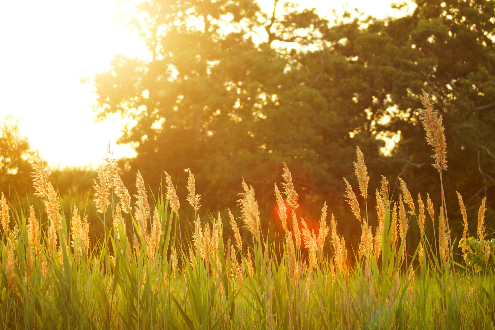
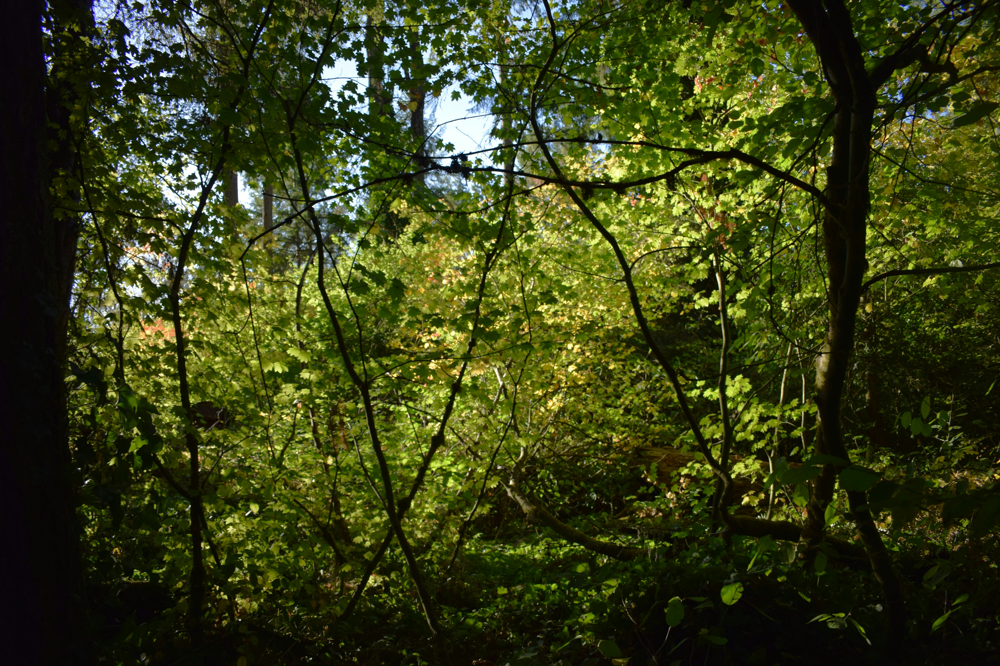

Summer
Hot and humid season with intense sunshine, mangoes, jackfruits, and warm winds. People drink refreshing beverages to stay cool under scorching temperatures.

Hot and humid season with intense sunshine, mangoes, jackfruits, and warm winds. People drink refreshing beverages to stay cool under scorching temperatures.
Heavy rainfall, cloudy skies, rivers overflow, and fields become fertile. Farmers welcome the rain that nourishes crops while nature refreshes beautifully across Bangladesh.

Clear blue skies, white fluffy clouds, fragrant flowers, and pleasant breezes define autumn, creating calm weather and scenic landscapes throughout rural and urban Bangladesh.

Dry weather with golden rice fields ready for harvest. Nature becomes cooler and quieter, signaling the seasonal shift towards winter across Bangladesh.

Cold mornings, foggy landscapes, and warm clothes mark winter. People enjoy pitha, date-juice, and cozy gatherings as temperatures drop pleasantly.
Colorful flowers bloom, temperatures stay mild, and nature becomes lively again. Birds sing, trees regain leaves, and Bengali festivals celebrate joyous springtime.